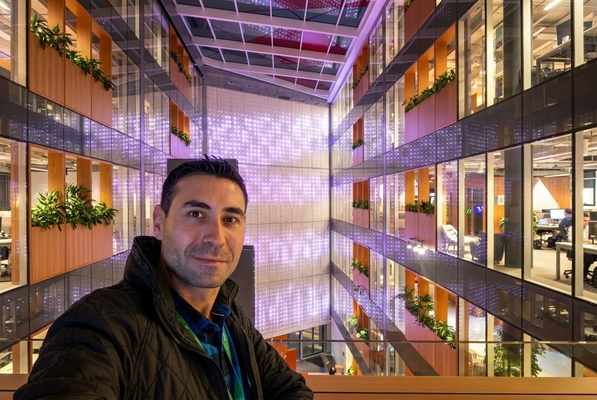
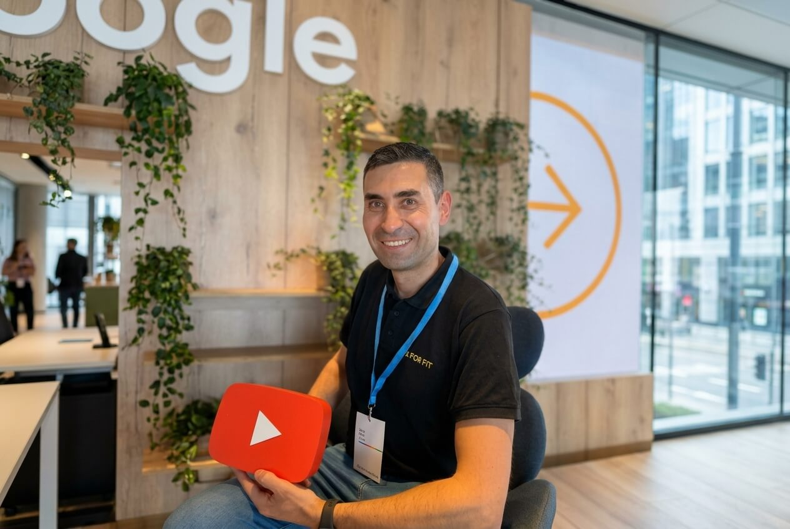

Повече от десет години търся отговор защо бизнесите губят пари в реклама — и какво да правят вместо това. Отговорът почти винаги е един и същ: основата е счупена. Поправете основата и всичко останало става по-лесно.
Повечето бизнеси нямат маркетингов проблем. Имат проблем с измерването. Щом разберете кое реално работи, растежът става много по-евтин.
Пет глави, които оформиха начина, по който мисля за маркетинга и растежа.
Тръгнах от България с диплома по аграрна икономика и един въпрос: защо бизнесите харчат за маркетинг, без да знаят какво всъщност им носи? Лондон ми даде рамката. Магистратурата по стратегическа маркетингова комуникация в University of Greenwich ме научи как брандовете изграждат доверие — и как данните показват кои не успяват.

Върнах се в България и започнах в performance агенция, управляваща онлайн магазини в пет европейски пазара. Google и Facebook кампании, афилиейт мрежи, преговори за CPA, следене за измами. Там разбрах, че платеното привличане е дисциплина, а не начин да изгориш бюджет. Всяко евро трябваше да заслужи мястото си.
В Benchmark Finance всеки клик трябваше първо да спечели доверие и чак тогава конверсия. Ръководих многоканални кампании и изградих отчетност, която свързваше дигиталните резултати с телевизия и външна реклама — превръщайки разпръснатите данни в една ясна бизнес картина.

В 1FORFIT ръководих маркетинга в Google, Meta, TikTok и Bing в над 180 пазара, с екип от 50 души и над $20M рекламен бюджет. Използвахме AI, за да прогнозираме стойността на клиентите, изградихме абонаментни модели за растеж и партньорства със спортисти с над 21 милиона последователи. През 2024 г. станах CEO и поех стратегията и репозиционирането на продукта.
След повече от 10 години изграждане и мащабиране на маркетингови системи създадох KirovAds с една цел: да затворя разликата между това, което маркетингът ви изглежда, че прави, и това, което реално прави. Първо проследяване. После стратегия. Резултати винаги.
Не съм универсален маркетолог, нито представител на платформа. Специалист съм, който е работил с всеки голям рекламен канал — и знае кога числата не се връзват.
Над 15 години танцувам български народни танци и съм участвал в конкурси и фестивали в цяла Европа. Обичам да пътувам, да опознавам нови култури и да чета за лидерство и предприемачество. А ако се чудите как човек с диплома по аграрна икономика е стигнал до маркетинга — и аз се чудя. Оказа се най-доброто, което ми се е случвало.